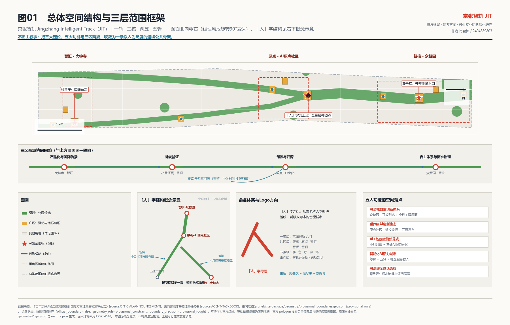
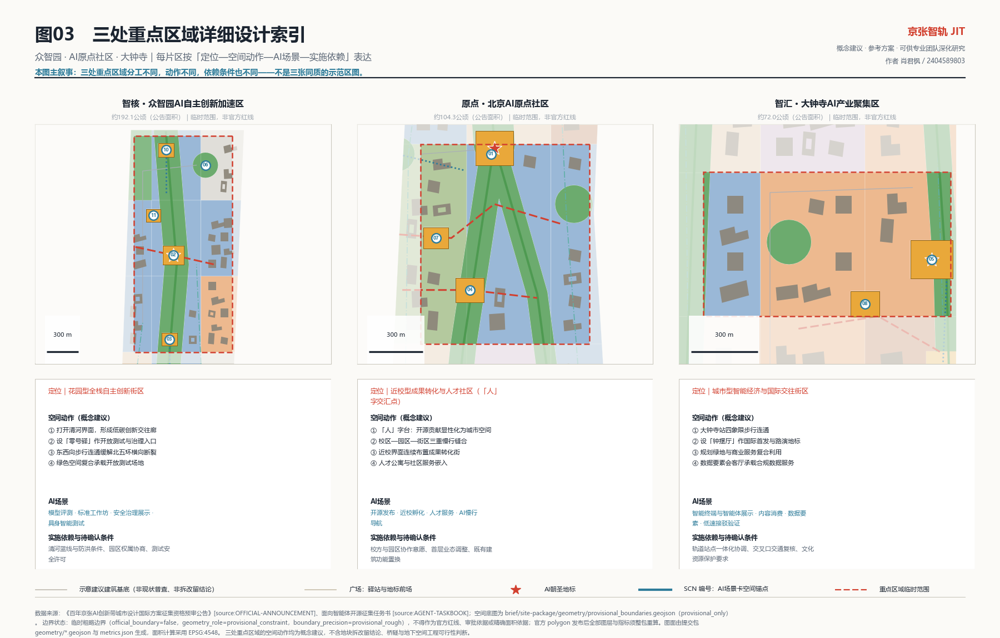
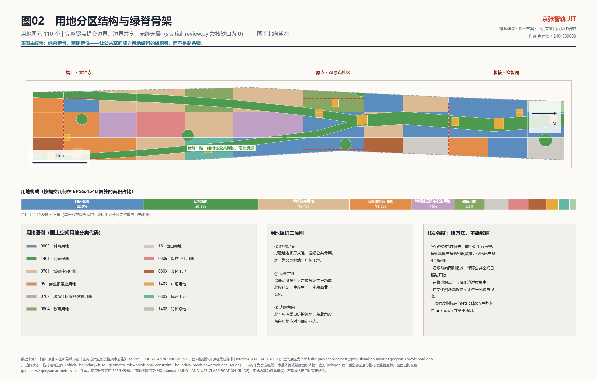
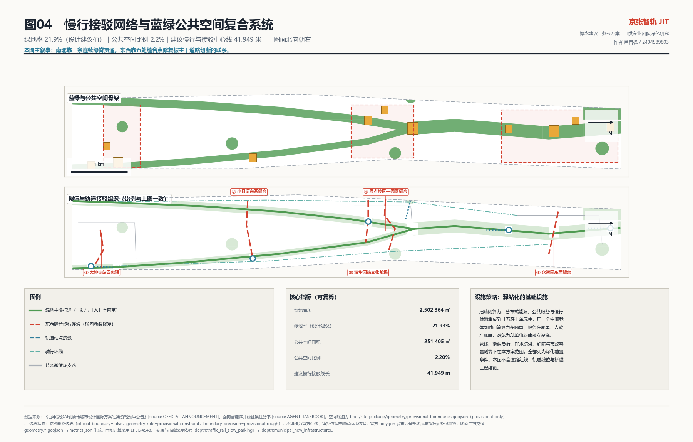
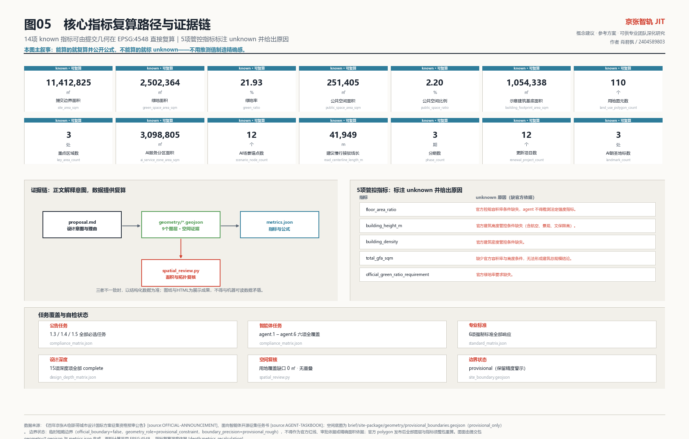

统筹研究范围 约43.6平方公里
交付产业生态与未来城市形态的判断。
- 「策源—开源—转化—验证—传播」五段创新链
- 三区两翼协同回路
- 六个全球案例的机制借鉴
作者 肖君枫（GitHub 2404589803）。本页是离线电子展示成果， 把总览地图、三层范围、重点区域、用地分区、交通慢行、蓝绿公共空间、建筑与更新项目、 AI 场景、核心指标、任务覆盖、自检状态、来源与假设转成人类可读的视觉说明。 权威结论仍以 GeoJSON、metrics.json、三个矩阵与自检结果为准。
总览地图把用地分区、蓝绿公共空间、AI 场景锚点与三处重点区域放在同一张证据图中： 一条连续绿脊主轴在原点社区北界形成「人」字交汇点，向北为主脊，向西南与东南分出两笔支脊， 分别衔接中关村科技服务翼与小月河场景赋能翼。

三层不是三套互不相干的图纸：判断决定结构，结构约束动作，动作反过来验证判断是否可实施。 每层都锁定了可交付物边界。
交付产业生态与未来城市形态的判断。
交付城市更新与控规深度城市设计的结构与图层。
交付三处片区的详细设计动作。
三处重点区域分工不同、动作不同、依赖条件也不同，每片按「定位—空间动作—AI场景— 实施依赖—待确认条件」五段表达。

约192.1公顷（公告面积）。花园型全栈自主创新街区。
约104.3公顷（公告面积）。近校型成果转化与人才社区，「人」字交汇点所在。
约72.0公顷（公告面积）。城市型智能经济与国际交往街区。
组织逻辑是「绿脊定骨、两侧定性、边缘留白」：让公共空间成为用地结构的组织者， 而不是剩余物。用地代码语义采用国土空间用地用海分类指南。

建筑图层是示意性建议基底，不是现状建筑普查成果，也不是任何地块的拆改留结论。 在缺少现状建筑、权属、控规与工程条件的前提下，只提供判别方法：
官方控规条件缺失，故不给出容积率、建筑高度与建筑密度数值，仅给出三条组织原则：
南北靠一条连续绿脊贯通，东西靠五处缝合点修复被主干道路切断的联系。 本页不涉及道路线形、轨道线位、桥隧工程与红线结论。

把端侧算力、分布式能源、公共服务与慢行休憩集成到「五驿」单元中， 用一个空间载体同时回答算力在哪里、服务在哪里、人歇在哪里，避免为AI单独新建孤立设施。 公共服务按社区级、片区级、一带级三级配置。
三处AI朝圣地标构成「起点—检验—发布」的叙事闭环，避免地标沦为单纯的网红打卡物。
原点社区。全带精神原点与开源贡献者荣誉台， 形态取「人」字折线的实体化，铭刻系统以「轨枕」为单元逐条增长。
众智园。取铁路机务段「零号」编号意象， 是开放测试与标准治理的公共入口，也是公众理解「AI如何被检验」的场所。
大钟寺。取古钟意象转译为AI时代的节律符号， 承担国际首发与路演。
场景不是口号。每张场景卡都说明空间锚点、数据来源与隐私边界、人工复核环节； 运营主体、退出机制与合规审查在 proposal.md 中逐条列明。 共 12 张，空间锚点已全部进入 constraints.geojson。
| 编号 | 场景 | 空间锚点 | 数据来源与隐私边界 | 人工复核 |
|---|---|---|---|---|
01 | 开源发布厅 | 原点社区「人」字台 | 自愿提交的公开成果数据 | 发布内容人工审核 |
02 | 安全治理与红队评测沙盒 | 众智园零号驿 | 受控测试数据，不出场 | 评测结论专家复核 |
03 | 端侧算力驿站 | 众智园南门户 | 不采集用户内容数据 | 调度异常人工介入 |
04 | AI慢行导航与无障碍诊断 | 清华园站文化前场 | 公开地图与匿名聚合客流 | 断点结论现场复核 |
05 | 钟摆厅国际首发与路演 | 大钟寺钟摆厅前场 | 参与者自愿登记信息 | 内容与版权人工审核 |
06 | 清河低碳创新廊 | 众智园清河界面 | 公开环境与能耗指标 | 生态影响人工评估 |
07 | 近校成果转化街 | 原点社区发布场 | 授权后的成果信息 | 转化协议人工把关 |
08 | 数据要素会客厅 | 大钟寺会客厅前场 | 仅使用已授权、可审计数据 | 合规审查前置 |
09 | AI生活服务样板街 | 小月河场景开放场 | 最小必要业务数据 | 服务纠错人工响应 |
10 | 全球AI活动周体验路线 | 北五环门户至大钟寺全线 | 公开活动信息 | 活动安全人工值守 |
11 | 具身智能公共空间测试场 | 众智园标准治理前场 | 测试场内受控感知数据 | 安全员全程在场 |
12 | 低速接驳与微循环验证场 | 大钟寺站四象限 | 匿名化运行数据 | 交通安全人工复核 |
具身智能与服务机器人公共空间测试场：限定时段与区域、公示告知、安全员在场； 出现安全事件即刻暂停并复盘。
低速接驳与微循环验证场：低速限定、路权分离、不占用无障碍通行空间； 交通管理部门可随时终止。
公共服务智能体评测沙盒：不使用个人隐私数据、不接入未授权业务系统； 不达标即退回实验室。
共 12 个概念建议更新项目， 分 3 期推进。分期逻辑是「轻先重后、以运营带建设」。 清单中的项目均为研究性建议，不构成立项、投资、时序或审批结论。
| 编号 | 项目名称 | 类型 | 分期 |
|---|---|---|---|
JZ-01 | 绿脊南北贯通与慢行断点缝合 | 公共空间/交通 | 一至三期 |
JZ-02 | 「人」字台与轨枕荣誉系统 | 地标/运营 | 一期 |
JZ-03 | 原点社区近校成果转化街 | 城市更新/产业服务 | 一期 |
JZ-04 | 大钟寺站四象限步行连通 | 轨道一体化/慢行 | 一期 |
JZ-05 | 钟摆厅国际首发与路演厅 | 地标/产业服务 | 一期 |
JZ-06 | 众智园清河低碳创新界面 | 蓝绿空间/产业展示 | 二期 |
JZ-07 | 零号驿开放测试与标准治理入口 | 新基建/治理 | 二期 |
JZ-08 | 五驿端侧算力与公共服务单元 | 新基建/公共服务 | 二期 |
JZ-09 | 众智园东西缝合步行连通 | 交通/公共空间 | 二期 |
JZ-10 | 小月河AI生活服务样板街 | 城市更新/公共服务 | 三期 |
JZ-11 | 人才居住与社区服务嵌入 | 城市更新/配套 | 三期 |
JZ-12 | 全球AI创新活动周公共路线 | 运营/品牌 | 一至三期 |
以界面开放、轻量设施与运营活动启动，尽早形成可感知的公共成果。
推进开放测试、标准治理与清河界面公共空间成型。
完成小月河场景赋能翼与南北贯通、东西缝合的公共空间网络。
能算的就复算并公开公式，不能算的就标 unknown——不用推测值制造精确感。 14 项 known 指标全部由提交几何在 EPSG:4548 复算，可由 spatial_review.py 独立复核。

| 指标 | 单位 | unknown 原因（缺官方依据） |
|---|---|---|
floor_area_ratio | ratio | 官方控规容积率条件缺失，agent 不得推测法定强度指标。 |
building_height_m | m | 官方建筑高度管控条件缺失（含航空、景观、文保限高）。 |
building_density | ratio | 官方建筑密度管控条件缺失。 |
total_gfa_sqm | sqm | 缺少官方容积率与高度条件，无法形成建筑总规模结论。 |
official_green_ratio_requirement | ratio | 官方绿地率要求缺失。 |
compliance_matrix.json 覆盖公告 1.3/1.4/1.5 共 17 项必选任务与 agent.1–agent.6 共 6 项智能体任务；standard_matrix.json 覆盖 6 项强制专业标准；design_depth_matrix.json 覆盖 15 项正式设计深度项并全部为 complete。
| 任务 | 标题 | 本方案的响应 |
|---|---|---|
agent.1 | 一带总体概念与功能统筹方案设计 | 总体概念「人」字之轨；主名称京张智轨 / Jingzhang Intelligent Track（JIT）；四级命名体系与「人」字母题Logo方向；空间结构收敛为一轨三核两翼五驿。 |
agent.2 | AI全栈自主创新体系与世界级AI创新生态设计 | 六个全球案例机制借鉴 + 五段创新链 + 三区两翼协同回路 + 土地/算力/数据/场景/人才/要素六类保障建议，全部不含量化对标数据。 |
agent.3 | AI+场景赋能新范式与智能化AI活力城市设计 | 12张AI场景卡（含空间锚点、服务对象、数据与隐私边界、人工复核、运营主体）、6类用户画像、3个产业测试验证场景，全部保留人工复核与退出机制。 |
agent.4 | AI公共空间、智能原生新业态与朝圣地标设计 | 三处AI朝圣地标（「人」字台、零号驿、钟摆厅）构成起点—检验—发布叙事闭环；轨枕计划荣誉体系与五类公共空间组件库支撑可分期实施。 |
agent.5 | 百年京张文化、中关村文化与AI新文化融合叙事设计 | 三层时间叠合：1909年京张自主工程、八十年代以来中关村创新、当下AI开源共创，共同点是自主与共创；导视以「人」字母题统一且与品牌标志分层。 |
agent.6 | 一带全球AI创新活动体系与长期运营设计 | 五项年度活动（智轨开源周、原点马拉松、智轨对话、场景开放日、轨枕计划）、开发者社区三层运营机制、场景开放五步闭环与国际招引转化路径，均标注为设想安排。 |
deterministic validation、spatial review、visual packaging check 与 professional evidence review 必须全部通过。当前边界状态为 provisional， 精度警示随成果一并保留。
| 检查项 | 结果 | 级别 | 目标 | 说明 |
|---|---|---|---|---|
BOUNDARY_TRUST | pass | major | geometry/site_boundary.geojson | 提交边界直接取自仓库登记的 provisional_only 临时粗略 polygon（PROV-SITE-001），未做形状修改；official_boundary=false、boundary_precision=provisional_rough。EPSG:4548 复算面积 11,412,825 平方米，公告文字面积约 11,400,000 平方米，差异属边界精度缺口而非设计结论。 |
KEY_AREAS_TRUST | pass | major | geometry/key_areas.geojson | 公告要求的三处重点区域（众智园、AI原点社区、大钟寺）全部落图，几何取自登记的 PROV-KEY-001..003 临时范围，标注 geometry_role=provisional_constraint。临时范围面积不得用于正式核算，正文与图纸中的公顷数均引用公告数值而非临时几何复算值。 |
LAND_USE_TOPOLOGY | pass | major | geometry/land_use.geojson | 110 个用地图元由提交边界完整划分而成：布尔运算在 1e-7 度精度网格上执行，相邻图元共享同一组顶点。spatial_review.py 复核结果为覆盖缺口 0 平方米、图元之间无重叠、指标与几何一致。 |
METRICS_RECOMPUTED | pass | major | metrics.json | 14 项 known 指标全部由提交几何在 EPSG:4548 下复算，每项带 formula 与 source_files，可由 scripts/spatial_review.py 独立复核；5 项管控指标（容积率、建筑高度、建筑密度、建筑总规模、官方绿地率要求）标注 unknown 并给出缺依据原因，未使用推测值。 |
VISUAL_STATIC | pass | info | visual/index.html | visual/index.html 与 report/proposal.html 为纯离线静态页面：不加载远程脚本、样式、字体、地图瓦片与媒体，不含 iframe、表单与外部接口调用，不跟踪评审者行为；页面中的指标数值全部由 metrics.json 生成，无法与机器可读证据脱节。 |
DRAWINGS_COMPLETE | pass | major | drawings/a3-booklet.pdf | A3 图册 13 页（封面、五张图纸页、三层范围与结构、重点区域详细设计、AI 场景卡、更新与实施、指标与证据链、任务覆盖、风险与合规），A0 展板 3 张（总体概念与结构、用地与蓝绿慢行、重点区域与场景实施）；表格与指标均从结构化数据生成。 |
PROFESSIONAL_EVIDENCE | pass | major | proposal.md | 正文以 [source:]、[standard:]、[depth:]、[data:]、[metric:] 五类引用把每项判断链接到已登记来源、6 项强制专业标准、15 项设计深度项、9 个几何图层与 19 项指标；compliance_matrix.json 覆盖公告 1.3/1.4/1.5 全部必选任务与 agent.1–agent.6，design_depth_matrix.json 全部为 complete。 |
SOURCE_DISCIPLINE | pass | major | sources.json | 9 条资料逐条登记 usable_for_formal、allowed_uses、prohibited_uses 与限制说明：formal 可用 6 条、provisional_only 2 条、background_only 1 条。background_only 的全球案例仅用于机制借鉴，方案中不含任何案例投资额、产值、企业名单与财政承诺数据。 |
COPYRIGHT_CLEAN | pass | major | report/copyright_statement.md | 提交包不含第三方字体、图像、照片、商标、企业标识、肖像、卫星与航拍影像及地图瓦片；全部图形元素为程序化绘制，许可为 COMMUNITY-DISPLAY-ONLY。 |
CONTROL_CONDITIONS_MISSING | unknown | minor | assumptions.json | 容积率、建筑高度、建筑密度、退线、道路红线、市政容量、文物保护范围与建设控制地带、河道蓝线等官方控制条件均缺失，本方案据此拒绝给出相关结论，全部降级为待确认事项并记录在 assumptions.json；开发强度只给组织方法不给数值。 |
共 9 条资料：formal 可用 6 条、 provisional_only 2 条、 background_only 1 条。background_only 与 provisional_only 资料未被升级为官方边界、法定控规、正式评分依据或实施承诺。
| 来源 ID | 标题 | formal 可用性 | 使用限制 |
|---|---|---|---|
PUBLIC-BRIEF | 开源征集公开任务说明与公开边界说明 | yes | 公开说明文档界定引用边界，不提供空间数据与控规条件；一切空间与指标结论回到公告、任务书与提交几何。 |
OFFICIAL-ANNOUNCEMENT | 百年京张AI创新带城市设计国际方案征集资格预审公告 | yes | 公告的文字四至与面积值不能替代官方 GIS/CAD polygon；本方案未据此声称任何法定控制结论。 |
AGENT-TASKBOOK | 面向全球智能体开展“百年京张AI创新带城市设计开源征集”的任务书摘录 | yes | 任务书是 agent 任务响应依据，不是官方空间红线或控规条件。 |
SITE-PACKAGE | 站点资料包（设计要求、可设计空间、枚举、阈值、Schema） | yes | planning_limits.json 中的 schema_sanity_bounds 只是取值合理性边界，不是规划审批指标。 |
SOURCE-REGISTRY | 仓库公开资料可用性登记表 | yes | 登记表本身不是空间数据来源，只界定用途边界。 |
PROCESSED-FACT-PACK | Agent 可读资料导航层（范围、任务、资料用途、缺资料清单） | yes | 导航层不是新的权威来源，所有事实判断回到公告与任务书。 |
BOUNDARY-SOURCE | 总体设计范围临时粗略 polygon（provisional） | provisional_only | official_boundary=false、boundary_precision=provisional_rough；官方 polygon 发布后全部图层与指标必须整包重算。 |
KEY-AREA-SOURCE | 三处重点区域临时粗略 polygon（provisional） | provisional_only | 公告已给出三处面积数值（192.1/104.3/72.0 公顷），但未提供精确 polygon；临时范围面积不得用于正式核算。 |
GLOBAL-CASE-BACKGROUND | 全球AI与创新街区公开机制背景（King's Cross、Station F、Mila、one-north、Maria 01、Hazelwood Green） | background_only | 本条为 background_only 资料，方案中不含任何案例数量指标；案例事实须在深化阶段以官方或权威公开资料核验后方可正式引用。对应假设条目 A-CASES-001。 |
共 12 条假设与数据缺口。每条假设都对应正文中的一处 降级表述：凡缺少官方依据的内容，一律写为待确认事项、概念建议或参考方案。
| 假设 ID | 状态 | 说明 |
|---|---|---|
A-BOUNDARY-001 | blocked_by_missing_official_data | 官方总体设计范围精确边界缺失，提交边界为临时粗略范围。EPSG:4548 复算面积 11,412,825.386 平方米与公告文字面积约 11,400,000 平方米的差异属于边界精度缺口，不是设计结论。 |
A-KEYAREA-001 | blocked_by_missing_official_data | 三处重点区域官方精确 polygon 缺失。公告已给出面积数值（众智园约192.1公顷、AI原点社区约104.3公顷、大钟寺约72.0公顷），但临时范围的复算面积不得用于正式核算或评分。 |
A-CONTROLS-001 | pending_professional_confirmation | 容积率、建筑高度、建筑密度、退线、道路红线、市政容量与权属条件均无官方依据，本方案据此拒绝给出相关数值结论。 |
A-HERITAGE-001 | blocked_by_missing_official_data | 文物保护范围、建设控制地带与河道蓝线的官方边界缺失。为避免生成伪精确控制线，本方案刻意未绘制 HERITAGE_PROTECTION、REGULATORY_CONTROL、EXISTING_WATER 等受锁定图层。 |
A-BUILDINGS-001 | illustrative_only | 建筑基底图层为依据用地分区生成的示意性建议基底，不是现状建筑普查成果。building_footprint_area_sqm 不得作为建筑规模、开发强度或拆改留结论使用。 |
A-MOBILITY-001 | conceptual_suggestion | 道路中心线仅表达慢行与接驳组织意图，不代表道路线形、红线、轨道线位、桥隧工程或交通工程结论。road_centerline_length_m 为建议线长度统计。 |
A-METRICS-001 | recomputation_required | 全部 known 指标均由提交几何在 EPSG:4548 下复算，可由 scripts/spatial_review.py 复核。green_ratio 与 public_space_ratio 是设计建议值，不是官方绿地率或公共空间管控指标。 |
A-STANDARD-001 | blocked_by_missing_official_file | 《建筑工程设计文件编制深度规定（2016年版）》的本地参考快照状态为 needs_official_file / missing_source_url，缺少官方正文。 |
A-CASES-001 | background_only_needs_verification | 全球案例仅借鉴公开报道中的机制类型（公共空间先行、存量弹性权属、测试场与大学能力绑定），资料属性为 background_only，方案中不含任何案例数量指标。 |
A-SCENARIO-001 | conceptual_suggestion | 全部12张AI场景卡与3个产业测试验证场景均为概念建议，不得表述为已批准运营。每个场景均要求数据最小化、公开来源优先、明确运营主体、保留人工复核环节并设置退出机制。 |
A-OPERATION-001 | conceptual_suggestion | 年度活动体系、开发者社区运营、场景开放机制与国际招引转化路径均为设想安排，不构成已确定的政府活动、财政投入、招商政策或审批时序。 |
A-COPYRIGHT-001 | cleared | 本提交包中的全部图纸、图示、PDF 与 HTML 均由本方案基于提交几何与指标生成，未嵌入任何第三方字体、图像、商标或肖像资产。 |